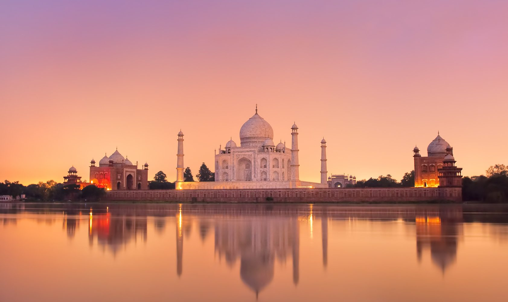

Тадж Махал е храм-мавзолей, който се намира в Агра, Индия, на брега на река Ямуна. Той е построен приблизително между 1630-1652 г. по поръчка от императора Шах Джахан („Повелителят на света“), в памет на неговата съпруга Мумтаз Махал, която почива по време на раждане. Съкрушеният от мъка император обявява двугодишен траур в страната и скоро решава да построи в тогавашната столица Агра на мястото на гроба на Мумтаз мавзолей, който да символизира приказната красота на любимата съпруга. По-късно там е погребан и самият Шах Джахан. Вътре в мавзолея са разположени две гробници – на шаха и на неговата съпруга.
Тадж Махал е съоръжение върху платформа с пет купола, издигащи се на височина 74 метра и с 4 минарета в ъглите (те са леко наклонени навън от гробницата, за да не я повредят в случай на разрушение). Пред храма е изградена градина с фонтани и басейн. Стените са от полиран полупрозрачен мрамор с инкрустации от скъпоценни камъни. Мраморът има интересна особеност – при ярка дневна светлина той изглежда бял, рано сутрин той става розов, а в лунна нощ – сребрист.
За строителството на комплекса са били поканени над 20 хиляди майстори от всички краища на империята, а също и от Централна Азия, Персия и Близкия изток. На другия бряг на реката е трябвало да бъде построена сграда-близнак, изградена от черен мрамор, но тя така и не е била достроена. Тези две сгради е трябвало да бъдат съединени с мост от сив мрамор.
Мавзолеят има многобройни символи, скрити в неговата архитектура и планиране. Така например на портата, през която посетителите влизат в парковия комплекс пред мавзолея, е изсечен цитат от Корана, който завършва с думите „влез в моя рай“. На местния език от онова време думите „рай“ и „градина“ са се изписвали по един и същ начин и затова може да се смята, че замисълът на Шах Джахан е да пресъздаде рая на земята и да положи тялото на своята възлюбена в него.
